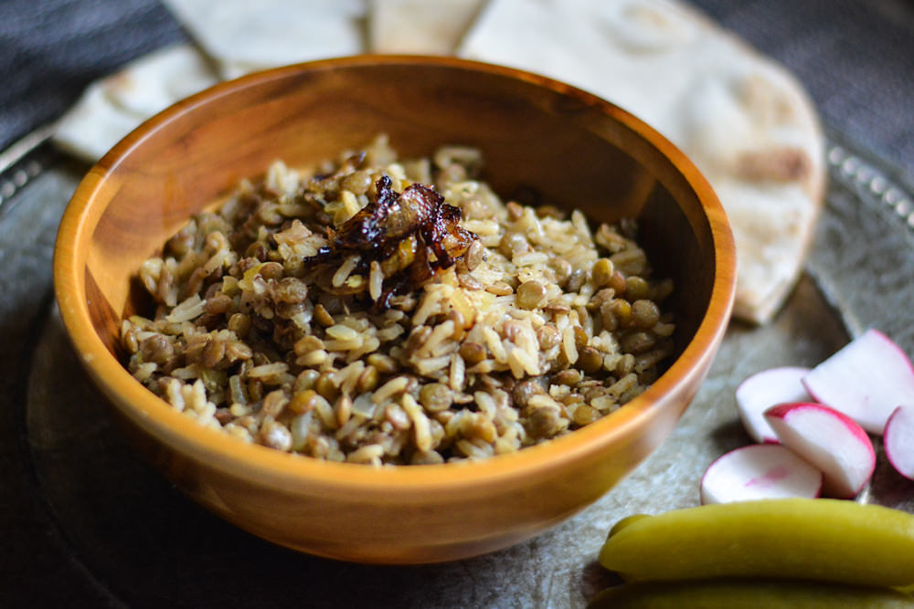

Mujadara

Lebanese food has a reputation of being a very protein-rich cuisine.
However, there are actually a large variety of vegetarian and vegan dishes.
Mujadara, a lentil based dish, is one of the most popular ones.
There are many different varieties of mujadara. This dish is a mixture of green lentils and white rice.
Ingredients
- 1 cup green lentils
- 0.5 cup white rice
- 2 onions
- 2 tbl olive oil
- 4 cups water
- 1.5 tsp ground cumin
- 1 tsp salt
- 0.5 tsp black pepper
- Boil the lentils in the 4 cups of water for 10 minutes on medium heat.
- While the lentils are cooking, dice the first onion and sauté in a small pan with 1 tablespoon of olive oil until translucent. Add the cumin and sauté for 1 more minute, set aside.Slice the remaining onion into thin slices and sauté in the same pan with a tablespoon of oil on medium-low heat until deep golden brown and caramelized. Stir often to prevent the onions from burning. These will be the onions used to garnish the final dish
- Wash the rice thoroughly and add to the lentils along with the sautéed diced onion. Season with salt and pepper and lower the heat all the way down to low. Cook for 10-15 minutes covered until all the water has been absorbed.
- Garnish the Mujadara with the caramelized onions and serve at room temperature with pita bread and a side salad